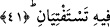

Âriflerin önderi Şeyh Abdullah Kureşî (r.h.)’ın şöyle dediği rivâyet edilir: “Her
şeyin fiyatının büyük oranda arttığı günlerde Mısır’a gittim. Bu pahalılığın kaldırılması
için Allah’a duâ ve niyazda bulunmaya karar verdim. Ancak bana, bundan imtinâ etmem
işaret edildi. Ardından Suriye’ye doğru yola çıktım. Halilullah (a.s.)’ın mezarına
yaklaştığım zaman, Halil (a.s.) beni karşıladı. “Yâ Halilallah, Mısırlılar’a duâ edersen
beni ağırlamış olacaksın.” dedim. Bunun üzerine Halil İbrahim (a.s.) onlar için duâ etti
ve Allah üzerlerindeki bu sıkıntıyı kaldırdı.”
İmam Yâfiî şöyle der: Şeyh Abdullah Kuraşî’nin; ‘Halil (a.s.) beni karşıladı’ sözü,
haktır. Onların göklerin melekûtunu müşâhede ettiklerinde kendilerine vârid olan halleri
bilmeyenlerden başkası bunu inkâr etmez.
Şunu da bilesin ki bütün peygamberler, îman etmekle ve hâlisâne kulluk etmekle
memur olmuşlardır. İman da eskiyip pörsüyebilir. Nitekim Hz. Peygamber’in şu sözü de
buna delâlet eder: “Lâ ilâhe illallah (Allah’tan başka ilâh yoktur.) diyerek îmanınızı
tazeleyin.”[40]
İmanın eskiyip pörsümesi, muhabbetin yok olmasından ileri gelmektedir. Bu sebeple
kalb tarafından yapılan sözleşmenin kelime-i tevhid ile yenilenmesi lâzımdır.
Kelime-i tevhid, nefy ve isbâttan oluşur. Mâbud dışındaki bütün varlıkları yok sayar.
(Nefy), sonra da Maksûd’un varlığını isbât eder. Böylece muvahhid müşâhedenin
kemâline erer. Bunun meydana gelmesi de telkinin, sıdk ve yakîn ehli ile beraber
bulunmanın nûru ile olur. En azından bu zâtların meclislerinden ayrılmamak ve kalbini
bunlardan birine bağlamak gerekir.
Allah Teâlâ’dan bizi şeklen onlarla aynı mecliste olduktan sonra mânevî münâsebeti
elde etmeye de muvaffak kılmasını niyaz ederiz. Çünkü bol bol ihsanlarda bulunan,
mânâ ve hakîkatleri bol bol akıtan O’dur.
41. “Ey zindan arkadaşlarım ! (Rüyalarınıza gelince), biriniz (daha önce olduğu
gibi) efendisine şarap sunacak; diğeri ise asılacak ve kuşlar onun başından
(beynini) yiyecek. Yorumunu sorduğunuz iş (bu şekilde) kesinleşmiştir.”
“Ey zindan arkadaşlarım!” Rüyalarınıza gelince “biriniz” yâni, şarap sunan
delikanlı daha önce olduğu gibi, eskisi gibi “efendisine şarap sunacak;” İfadenin genel
akışı bu kimsenin kim olduğunu gösterdiği için kimliği belirtilmemiştir.